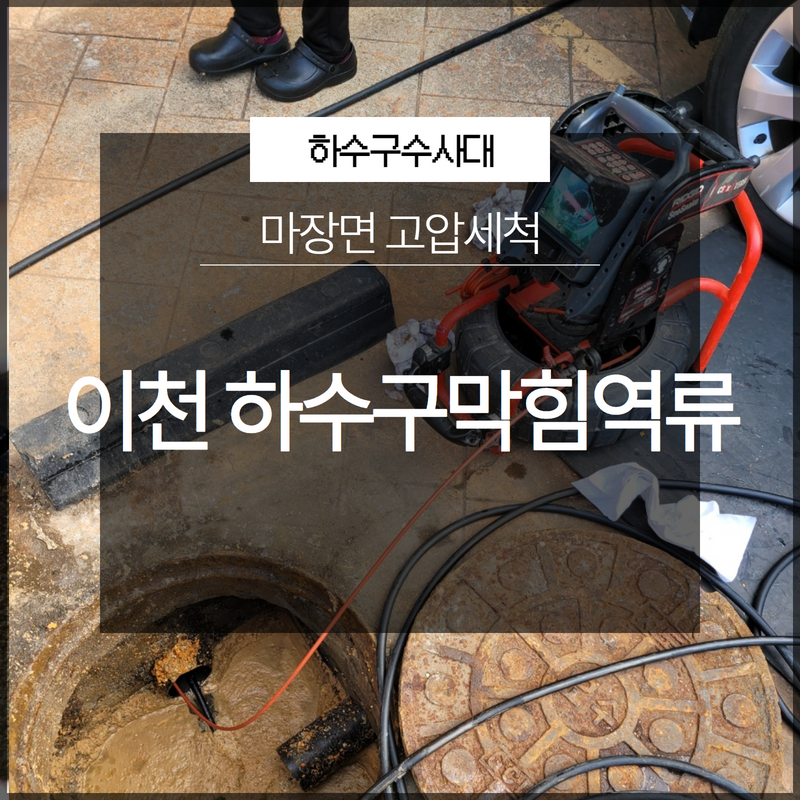
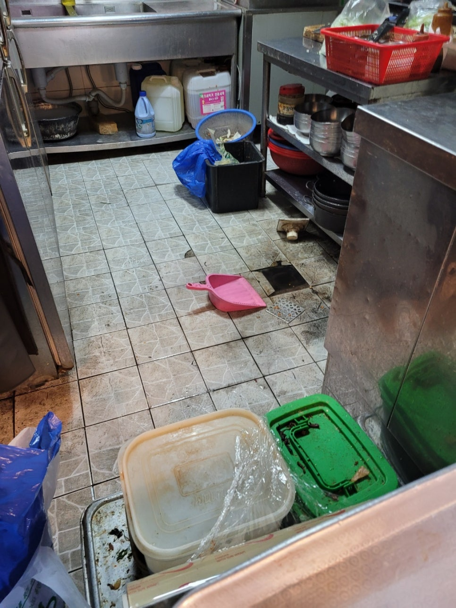
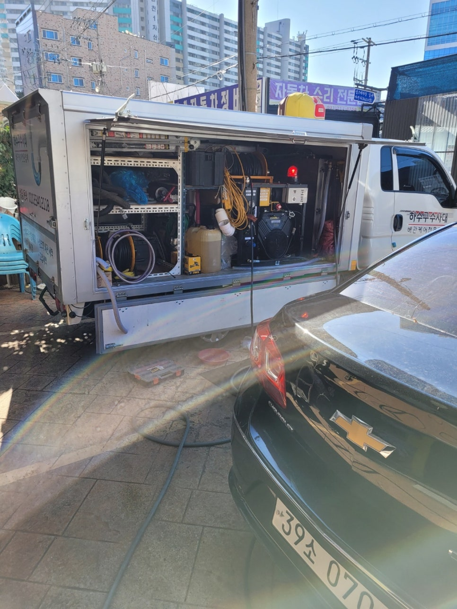
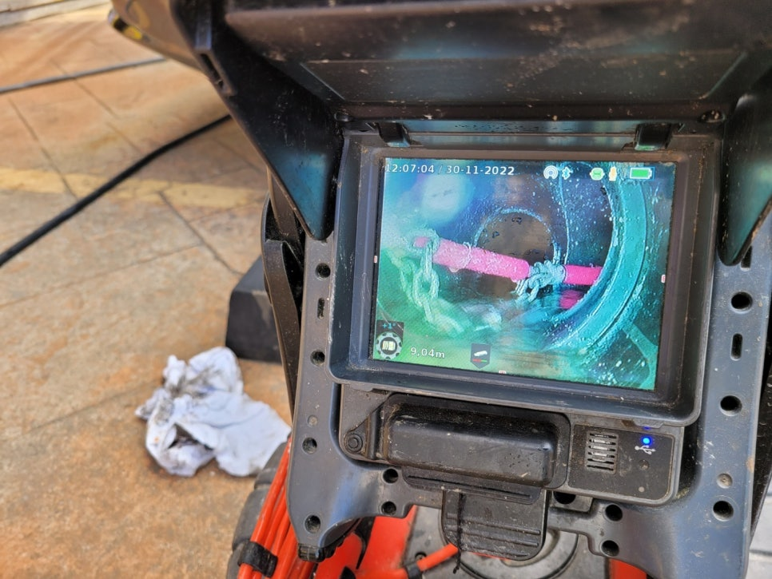
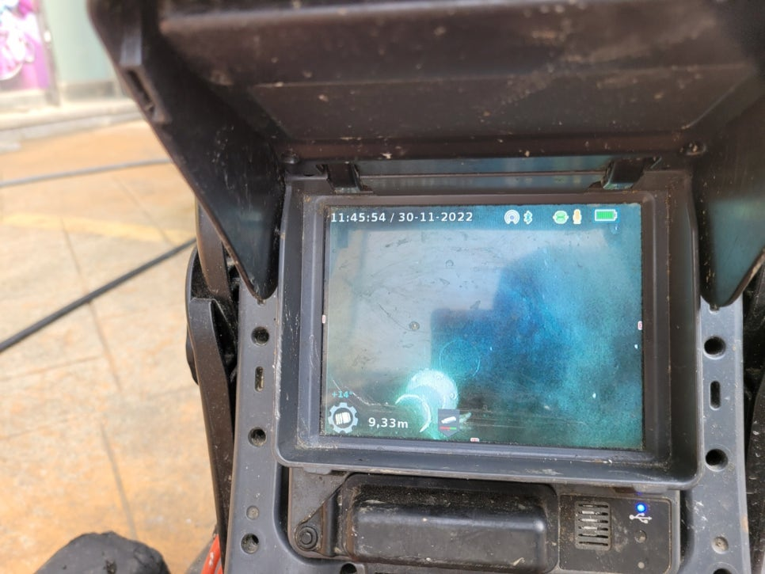

🏠 이천시 마장면 하수구막힘역류 고압세척 문제없이 신속하게!
용인 하수구막힘 전문 시공 후기

📋 작업 개요
- 위치: 용인
- 서비스 유형: 하수구막힘, 배관막힘, 맨홀막힘, 역류해결, 배관청소, 고압세척
- 작업 일시: 2023. 1. 2. 14:04
- 업체명: 하수구수사대 (010-5615-2118)
🔍 문제 상황
안녕하세요 하수구수사대입니다.
일상 속에서 우리는 원활한 배관의 흐름의 중요성을 잘 모르고 살아가는 경우가 많이 있습니다. 하지만 평소에 잘 사용하던 배관이 막히게 되면 급하게 해결을 하려고 하는 상황이 생기게 될 수 있습니다. 하지만 배관은 우리 눈에 보이지 않는 것인 만큼 원인도 모른 채로 해결을 한다는 것은 불가능하다고 할 수 있습니다.
그렇기 때문에 전문 업체를 통해서 해결을 하는 것이 필요한데요 이번에 방문한 이천시 마장면 하수구막힘역류 고압세척 현장의 사례를 통해서 배관 막힘이 발생을 하게 되면 어떻게 해결을 하게 되는지 알려드리는 시간을 가져보도록 하겠습니다.

🔎 원인 분석
💡 전문가 진단: 이천시 마장면 하수구막힘역류 고압세척 특히 하수구 막힘이 발생을 하고
이번에 방문을 한 곳은 복합건물로 되어 있는 곳이었는데요 메인 배관과 횡주관을 지나서 공동 하수도 배관이 심하게 막히게 되면서 요청을 해주시게 된 곳이었습니다. 이 정도의 배관 막힘은 혼자 서는 해결할 수 없을 정도이기 때문에 반드시 전문 업체로 의뢰를 하는 것이 필요하다고 할 수 있습니다.
이천시 마장면 하수구막힘역류 고압세척 특히 하수구 막힘이 발생을 하고
그냥 방치를 하게 되는 경우에는 아주 안 좋은 상황으로 악화가 될 수 있는데요 이번 현장의 경우도 오랜 시간 동안 방치가 되면서 역류까지 일어난 상황이라고 할 수 있습니다. 현장에는 상가가 밀집해 있는 곳이었기 때문에 식당의 음식물 찌꺼기와 기름때 등이 다양하게 유입이 되면서 시간이 지나 배관이 막혀버린 상황이었습니다.
공용공간을 이용하는 사람들의 경우도 많은 불편함을 겪을 수밖에 없는 상황이었습니다. 저희는 고객님께서 경제적 피해까지 입는 것을 최대한 줄이기 위해서 신속하게 방문을 해서 해결을 하고자 하였습니다. 현장에 도착을 했을 때는 이미 맨홀 위로도 역류한 물과 이물질들이 뒤엉키게 되면서 육안으로도 확인이 되는 정도의 상태였습니다.

🔧 작업 과정
보통은 건물의 안쪽에서 역류가 발생을 하는 것이 대부분이라고 할 수 있는데요 이번 현장에는 배관이 심각하게 막히다 보니 역류로 인해서 메인 배관의 맨홀을 들어 올릴 정도로 심각한 상황이었습니다. 겉으로 보기에도 이 정도의 상황이라면 배관 속의 상태는 더욱 심각할 것으로 판단이 되었습니다.
정확한 원인을 찾기 위해서
맨홀 뚜껑을 열고 배관 내시경으로 내부를 확인하는 작업을 진행하였습니다. 메인 배관이다 보니 하수구의 깊이도 깊고 배관 내부에는 여기저기 많은 이물질들이 붙어 있는 것이 보였습니다. 먼저 위에 고인 물을 제거하는 작업부터 진행을 하였는데요 하수구 막힘을 방치한 상태였기 때문에 물이 많이 역류하게 된 상황이었습니다.
석션기를 통해서 고인 물을 어느 정도 제거를 하고 본격적으로 이물질을 제거하는 작업을 진행하였는데요 다음으로 이물질을 분해하고 고인물을 제거하기 위해서 많이 사용을 하는 장비인 샤프트와 석션기를 배관 속으로 넣어서 부수고 흡입하는 과정을 반복하였습니다.
배관 막힘은 배관의 상태에 맞는 전문 장비를 이용해서
해결을 하는 것이 필요한데요 이렇게 배관이 깊고 내부에 이물질이 많은 경우에는 고압세척을 이용해서 배관 청소를 하는 방식으로 진행을 하기로 하였습니다. 고압세척은 고압의 수압을 이용을 해서 배관 내부에 있는 이물질들을 제거하는 것인데요 이렇게 배관이 깊고 큰 배관의 경우에는 고압세척을 통해서 이물질 제거와 함께 악취 제거까지도 한꺼번에 해결을 할 수 있는 장점이 있습니다.


✅ 작업 완료
이천시 마장면 하수구막힘역류 고압세척 작업을 통해서 배관 막힘의 문제를 말끔하게 해결을 하고
현장의 주변도 정리를 한 후 작업을 마무리하였습니다.




⚠️ 하수구 배관 막힘 예방 및 관리 가이드
- ✅ 머리카락, 비닐, 물티슈 등 물에 분해되지 않는 이물질은 하수구 유입을 절대 금지해 주세요.
- ✅ 하수구 거름망을 씌우고 모여진 이물질은 주기적으로 쓰레기통에 바로 비워주셔야 합니다.
- ✅ 배관 노후가 심할 경우 이물질이 더 쉽게 걸리므로 주기적인 배관 세척(고압세척 등)을 권장합니다.
- ✅ 작업 후 1년 이내 재발 시 하수구수사대에서 무상 A/S 보증 서비스를 제공합니다.
💡 핵심 정리
- 확실한 장비 작업(내시경 점검 및 샤프트 스케일링)으로 원인을 뿌리 뽑습니다.
- 작업 후 1년 이내에 동일한 부위 재발 시 100% 무상 A/S 서비스를 보장합니다.
- 서울 · 경기 · 인천 전 지역에 24시간 언제든 긴급 출동할 수 있도록 항시 대기 중입니다.
❓ 자주 묻는 질문 (FAQ)
🚨 용인 하수구막힘 문제로 고민이신가요?
정확한 원인 진단과 확실한 시공으로 재발 없는 해결을 약속드립니다.
24시간 긴급 출동 | 서울 · 경기 · 인천 전지역 | 1년 내 재발 시 무상 A/S